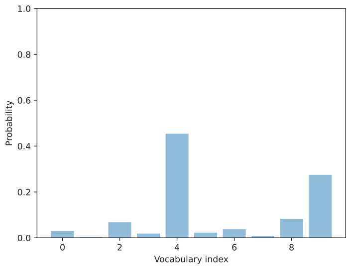
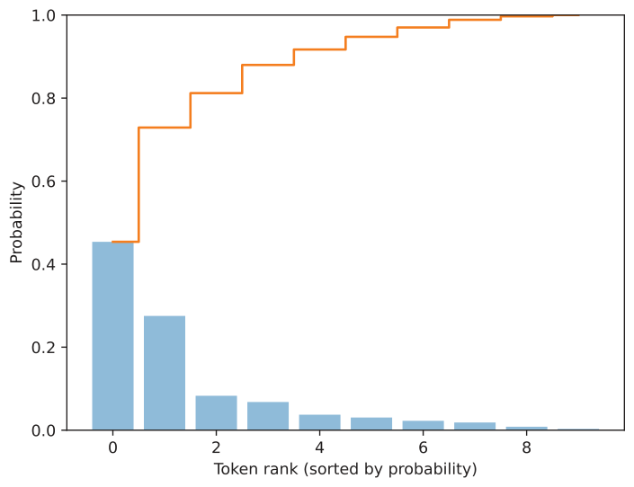
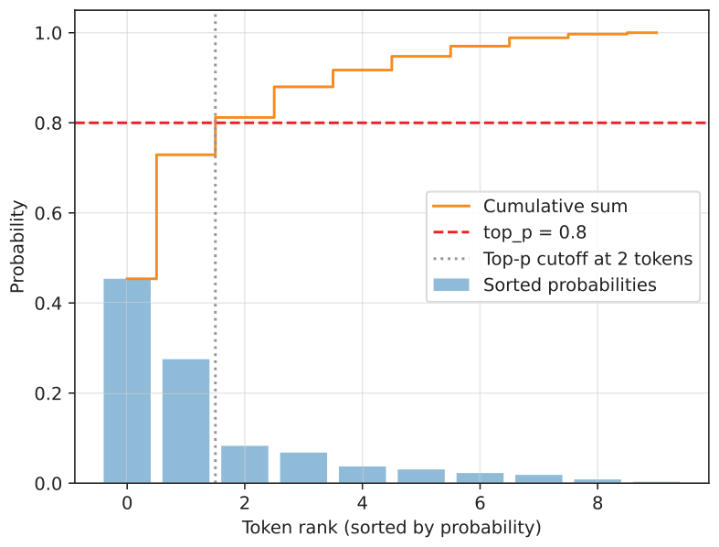

4.5.1Selecting a subset of top-p tokens
Before we implement the top-p filter, let’s introduce a simple toy dataset that will make the temperature-scaling and -sampling process easier to illustrate. To start, let’s assume the model’s and tokenizer’s vocabularies have only 10 entries, rather than 151,936.
toy_logits = torch.tensor(
[-0.7, -3.0, 0.1, -1.2, 2.0, -1.0, -0.5, -2.0, 0.3, 1.5]
)
toy_logits_scaled = scale_logits_by_temperature(toy_logits, 1.0)
toy_probas = torch.softmax(toy_logits_scaled, dim=-1)
plt.bar(
torch.arange(len(toy_probas)), toy_probas,
alpha=0.5
)
plt.ylim([0, 1])
plt.xlabel("Vocabulary index")
plt.ylabel("Probability")
plt.show()Note that the toy_logits variable holds example values for the next-token logit scores from the model(token_ids, cache=cache)[:, -1] call in listing 4.8, assuming that the vocabulary size is 10.
The resulting bar plot in figure 4.13 shows the next-token logit scores after they are rescaled to probabilities.

So far, this is basically a recap of the previous section. Now we’ll add the first two top-p filtering steps (steps 4.1 and 4.2) illustrated in figure 4.12. This involves sorting the probability scores in descending order and computing the cumulative sum.
sorted_probas, sorted_idx = torch.sort(toy_probas, descending=True)
cumsum = torch.cumsum(sorted_probas, dim=-1)
plt.bar(
torch.arange(len(sorted_probas)), sorted_probas,
alpha=0.5
)
plt.step(
torch.arange(len(cumsum)), cumsum,
where="mid", color="C1", label="Cumulative sum"
)
plt.ylim([0, 1])
plt.xlabel("Token rank (sorted by probability)")
plt.ylabel("Probability")
plt.show()The torch.cumsum function used in listing 4.10 computes the cumulative sum of elements along a given dimension. In this example, it takes the sorted token probabilities and adds them up step by step, so that each position in the result represents the total probability accumulated up to that token.
For instance, the first element equals the highest probability, the second equals the sum of the top two, and so on, until the final value reaches 1. This is best explained by looking at the cumulative step plot produced by the code in listing 4.10 and shown in figure 4.14.

Now that we have the cumulative probability sum, we can implement the core top-p filtering step. The p in top-p stands for probability, and top-p can be translated as “keep the smallest set of tokens whose cumulative probability stays below or equal to p.” The following listing shows a simple implementation of top-p filtering.
top_p = 0.8
keep_mask = cumsum <= top_p
n_kept = torch.sum(keep_mask).item()
print("Cumulative sum:", cumsum)
print("Tokens kept:", n_kept)In code, this is implemented as keep_mask = cumsum <= top_p, which marks all tokens whose cumulative probability mass does not yet exceed the threshold p (here defined as top_p=0.8). The number of retained tokens is then computed and assigned to the variable n_kept. The output follows:
Cumulative sum: tensor([0.4538, 0.7290, 0.8119, 0.8798,
0.9170, 0.9475, 0.9701, 0.9886, 0.9969, 1.0000])
Tokens kept: 2Looking at the returned cumulative probabilities, the second entry (0.7290) is just below the top-p threshold of 0.8, and the third entry (0.8119) exceeds it, which is why only the first two tokens are kept.
A more common variant of top-p filtering includes the token that exceeds the threshold, as shown in the next listing.
keep_mask = (cumsum - sorted_probas) < top_p
n_kept = keep_mask.sum().item()
print("Tokens kept:", n_kept)This code returns 3 as the number of tokens kept. This follows the definition of top-p filtering: the smallest set of tokens is kept such that the cumulative probability mass is at least p.
Let’s illustrate this top filtering with a plot.
plt.bar(
torch.arange(len(sorted_probas)), sorted_probas,
alpha=0.5, label="Sorted probabilities"
)
plt.step(
torch.arange(len(cumsum)), cumsum, where="mid",
color="darkorange", label="Cumulative sum"
)
plt.axhline(
top_p, color="red", linestyle="--",
label=f"top_p = {top_p}"
)
plt.axvline(
n_kept - 0.5, color="gray", linestyle=":",
label=f"Top-p cutoff at {n_kept} tokens"
)
plt.xlabel("Token rank (sorted by probability)")
plt.ylabel("Probability")
plt.legend()
plt.grid(alpha=0.3)
plt.ylim(0, 1.05)
plt.show()The plot produced by executing the code in listing 4.13 is shown in figure 4.15. This plot shows the top_p = 0.8 threshold value (the dashed horizontal line) that defines which tokens are kept. In this case, the cumulative sum of the first two tokens is below the threshold, so we exclude all other tokens to the right of the cutoff (the vertical dotted line).

To implement this threshold cutoff, we can use the following code, which first zeroes out all values to the right of the cutoff (the vertical dashed line in figure 4.15) and then restores the original sorting order.
kept_sorted = torch.where(
keep_mask, sorted_probas,
torch.zeros_like(sorted_probas)
)
filtered = torch.zeros_like(toy_probas).scatter(0, sorted_idx, kept_sorted)
print(filtered)The resulting tensor follows:
tensor([0.0000, 0.0000, 0.0000, 0.0000, 0.4538, 0.0000, 0.0000, 0.0000,
0.0829, 0.2752])You can see that all values except the ones at index positions 4, 8, and 9 are zeroed out. This means that if we now use the multinomial function, only those three tokens will be considered.
Finally, we renormalize these values so that they sum to one again:
denom = torch.sum(filtered).clamp_min(1e-12)
renormalized = filtered / denom
print(renormalized)The resulting normalized tensor is as follows:
tensor([0.0000, 0.0000, 0.0000, 0.0000, 0.5589, 0.0000, 0.0000, 0.0000,
0.1021, 0.3390])The goal of this top-p filtering is to remove tokens with low probabilities so they aren’t sampled later. This helps reduce nonsensical token responses in a given context.